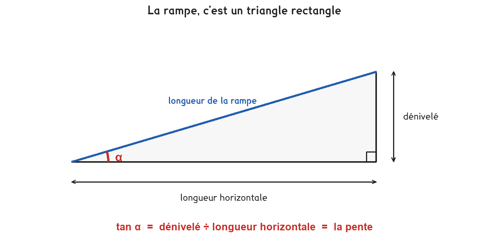

AA Algèbre et analyse — pourcentages, pentesGE Géométrie — triangle rectangle, Pythagore
Ce qu’il faut savoir avant
Une pente de 15 % monte de 15 m pour 100 m parcourus : dénivelé ÷ longueur × 100.
La longueur horizontale et la longueur réelle de la rampe ne sont pas la même chose.
Pythagore donne la longueur réelle : √(horizontale² + dénivelé²).
La calculatrice doit être en degrés, mode DEG, pour toute question d’angle.

Pour de faibles pentes, la longueur réelle et la longueur horizontale sont presque égales. Une rampe de 15 m à 8 % ne mesure que 5 cm de plus que ses 15 m horizontaux, et c’est pourquoi les travaux publics raisonnent en horizontal sans s’en excuser.
Trois pentes, trois longueurs
La rampe
La pente
La longueur réelle
15 m horizontaux, 1,20 m de dénivelé
8 %
√(15² + 1,20²) = 15,05 m
14 m horizontaux, 2,10 m de dénivelé
15 %
√(14² + 2,10²) = 14,16 m
40 m horizontaux, 6 m de dénivelé
15 %
√(40² + 6²) = 40,45 m
On porte le dénivelé sur l’hypoténuse. Les 3,60 m se mesurent verticalement, pas le long de la rampe. Un schéma fait avant le calcul rend l’erreur visible ; fait après, il ne sert plus à rien.
Pour aller plus loin
La longueur est inversement proportionnelle à la pentePour aller plus loin›
Quand la pente baisse, la longueur monte, mais pas dans les mêmes proportions.
Passer de 15 % à 12 %, c’est multiplier la pente par 0,80. La longueur est donc multipliée par 1 ÷ 0,80 = 1,25, soit + 25 %, et non + 20 %.
C’est exactement le mécanisme du défi 1 : baisser de 20 % puis vouloir revenir demande une hausse de 25 %. Deux habits pour le même piège, et il vaut la peine de faire le rapprochement une fois pour toutes.
Je m’entraîne
Les mêmes séries que sur la feuille. On remplit chaque case, puis on vérifie la série entière d’un coup.
Série · GE
Série 1, la pente en pourcentage
on monte de 1,20 m sur 15 m, la pente en %
on monte de 2,10 m sur 14 m, la pente en %
pente de 12 % sur 25 m, le dénivelé en mètres
pente de 6 % pour 0,90 m de dénivelé, la longueur horizontale en mètres
Dénivelé divisé par longueur horizontale, puis × 100. Les deux dernières lignes remontent le calcul.
Série · GE
Série 2, la longueur réelle de la rampe
15 m à l’horizontale, 1,20 m de dénivelé
14 m à l’horizontale, 2,10 m de dénivelé
40 m à l’horizontale, 6,00 m de dénivelé
Pythagore sur les deux côtés de l’angle droit. La rampe est l’hypoténuse : elle dépasse à peine l’horizontale.
L’observation à écrire
La série 2 donne un résultat qui surprend presque tout le monde. C’est la question de la feuille, et elle se rédige.
Exercice · GE
La rampe et l’horizontale
Dans la première ligne de la série 2 — 15 m à l’horizontale, 1,20 m de dénivelé, de combien la longueur réelle de la rampe dépasse-t-elle la longueur horizontale ? Et cela vous surprend-il ? Écrivez les deux en une ou deux phrases.
Soustrayez les deux longueurs de la première ligne. Le calcul prend trois secondes ; c’est la phrase qui demande du travail.
J’ai donné l’écart en chiffres, avec son unité
J’ai dit que cet écart est très petit : quelques centimètres
J’ai dit si je m’y attendais, et pourquoi
J’ai relié ce petit écart au fait que le dénivelé est faible devant la longueur
Série · GE
Série 3, de la pente à l’angle
une pente de 8 %, l’angle en degrés
une pente de 15 %, l’angle en degrés
une pente de 25 %, l’angle en degrés
un angle de 10°, la pente en %
La pente est une tangente. Machine en mode degré, et la touche inverse pour remonter à l’angle.
Le quiz
Une pente de 8 % sur 15 m donne un dénivelé de : 1,20 m | 8 m
La longueur réelle d’une rampe est : un peu plus | un peu moins que l’horizontale
tan⁻¹(0,15) vaut, en degrés : 0,15 | 8,5 | 15
La calculatrice affiche 0,26 pour tan⁻¹(0,15) : elle est juste | elle est en radians
Le problème. Descendre dans la fouille
Il faut descendre un engin au fond d’une fouille de 3,60 m de profondeur. La pente maximale admise est de 15 %.
Exercice · AA
La longueur horizontale
Quelle longueur horizontale faut-il pour descendre 3,60 m à 15 % ?
Faites le schéma d’abord. Le dénivelé se porte à la verticale, jamais sur la rampe.
Exercice · GE
La longueur réelle de la rampe
Quelle est la longueur réelle de la rampe, au centième ?
Pythagore, avec l’horizontale que vous venez de trouver et le dénivelé.
Exercice · GE
L’angle de la rampe
Quel angle fait cette rampe avec l’horizontale, au dixième de degré ?
La tangente de l’angle vaut la pente écrite en nombre décimal. Vérifiez le mode DEG.
Exercice · AA
L’emprise de 20 m
Le terrain ne laisse que 20 m d’emprise. La rampe passe-t-elle ? Donnez la pente qu’on obtiendrait, et concluez.
Le dénivelé ne change pas, l’emprise si. Refaites le calcul de pente.
J’ai calculé la pente obtenue sur 20 m
J’ai comparé cette pente aux 15 % autorisés
J’ai dit que la rampe ne passe pas, et proposé quelque chose
Pour les plus courageux
La carte blanche du défi papier : deux questions, et la seconde vaut la fiche.
Exercice · AA
La rampe à 12 %
Le chef de chantier veut descendre à 12 % pour plus de sécurité. De quel pourcentage la rampe s’allonge-t-elle par rapport à celle de 15 % ?
Calculez les deux longueurs horizontales, puis comparez-les. Ce n’est pas 20 %.
Exercice · AA
Pourquoi 25 et non 20
La pente a baissé de 15 % à 12 %, soit un cinquième en moins. La longueur, elle, monte de 25 %. Expliquez pourquoi les deux nombres ne sont pas les mêmes.
Si la pente est multipliée par un nombre, par quoi la longueur est-elle multipliée ?
J’ai dit que la pente a été multipliée par 0,80
J’ai dit que la longueur est donc multipliée par 1 ÷ 0,80
J’ai dit que la longueur et la pente varient en sens inverse
Défi de dépassement, niveau 2. Aucun corrigé ; rien n'est enregistré, rien n'est noté.